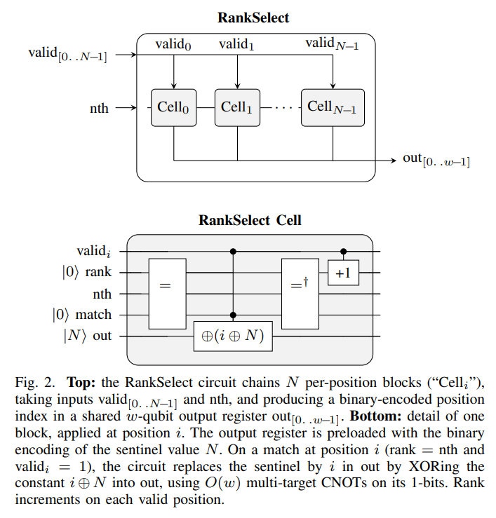

On Planet Quantos, Programmers Flee
They say the Ioni are social creatures living peacefully on planet Quantos.
You have been summoned by their health ministry.
It’s your first day on the job.
Hey, yea so, gonna head out early today. There’s a virus going around town. I’ll put you in charge of placing vaccine centers.
You got this, right?
Just keep everyone alive.
Let me show you the controls.
The Ioni are very trusting.
You’re asked to place a limited number of vaccine centers to slow the spread.
Red = infected and may die (too late to be vaccinated).
Gray = susceptible (vaccinate them).
Green = immune.
X = dead.
Ready?
The next day.
Morning, sorry I’m late.
Oh my… {{vaccinated}} saved, {{dead}} dead.
What did you do?!
You both enter through a door into a room with a machine dominating the space in every feng shui way possible.
We can’t be placing these vaccine centers manually anymore.
Listen, can you code?
Your time to shine. LFG.
Each cell is represented as a binary mask.
1 = valid (you can place here).
0 = invalid (not allowed).
We need your help writing an algorithm to place these vaccine centers.
Let’s start with a basic valid-move selector function.
Then we can compose it many times to simulate many moves ahead.
Bingo! Take this keyboard. Write a function called select.
Supply it with a boolean array, and have it select the n-th true item.
There’s no tab-complete, and certainly no coding agent installed here.
Nervous, you wipe a drop of sweat before it’s spotted.
You somehow managed to implement the function.
It’s in a C-like language.
int select(const bool *valid, int n_valid, int n) {
int count = 0;
for (int i = 0; i < n_valid; i++) {
if (valid[i]) {
if (count == n) return i;
count++;
}
}
return -1;
}Very good!
But I can’t use this.
Quantos machines do not clean up after you.
You’d expect count to disappear when the function returns. Not here.
You need to manage it.
You squint at the code.
The keyboard clicker clackers loudly as you make your edits.
int select(const bool *valid, int n_valid, int n) {
int *count = malloc(sizeof(int));
*count = 0;
int result = -1;
for (int i = 0; i < n_valid; i++) {
if (valid[i]) {
if (*count == n) { result = i; break; }
(*count)++;
}
}
free(count);
return result;
}Smart, but there’s no malloc allowed; these machines are a bit finicky.
You see, we’ll need to supply every function with its own scratch buffer.
Heck, even result should be an arg.
“This is stupid,” you think to yourself.
But you’ve seen worse. You’ve done worse.
void select(int *scratch, int *out, const bool *valid, int n_valid, int n) {
*scratch = 0;
*out = -1;
for (int i = 0; i < n_valid; i++) {
if (valid[i]) {
if (*scratch == n) { *out = i; break; }
(*scratch)++;
}
}
}Oh, you know what… something doesn’t look right.
The args must only be mutated by invertible operators, otherwise the machine will jam (Nielsen and Chuang 2010).
Like, the inverse of ^ (XOR) is itself, so that’s safe to use. Not a big deal, I hope.
Baffled, you make the final edits.
You pull out the XOR trick (Bennett 1973; Toffoli 1980).
// caller: pre-load *out = n_valid (the not-found sentinel)
void select(int *scratch, int *out,
const bool *valid, int n_valid, int n) {
int sentinel = n_valid;
for (int i = 0; i < n_valid; i++) {
if (valid[i]) {
if (*scratch == n) *out ^= (i ^ sentinel);
(*scratch)++;
}
}
}Incredible! But one more thing…
All the scratch values need to be reset.
You decrement what you increment.
// caller: pre-load *out = n_valid (the not-found sentinel)
void select(int *scratch, int *out,
const bool *valid, int n_valid, int n) {
int sentinel = n_valid;
for (int i = 0; i < n_valid; i++) {
if (valid[i]) {
if (*scratch == n) *out ^= (i ^ sentinel);
(*scratch)++;
}
}
for (int i = 0; i < n_valid; i++) {
if (valid[i]) (*scratch)--;
}
}Boo-yea baby! That’s the rank-select primitive.
We’ve been stuck on it for ten years.
Anyway. Ready for the next algorithm?
Let’s implement the state-transition function.
First we’ll need a fresh scratch register, then…
Huh. Must’ve stepped out for a bit. I’ll wait.
You’re on your way home, in thruster-to-thruster traffic on the Intergalactic-405.
With the spare time, you scribble what you remember:

Back on Earth, you write it up properly: arXiv preprint (Shukla 2026).